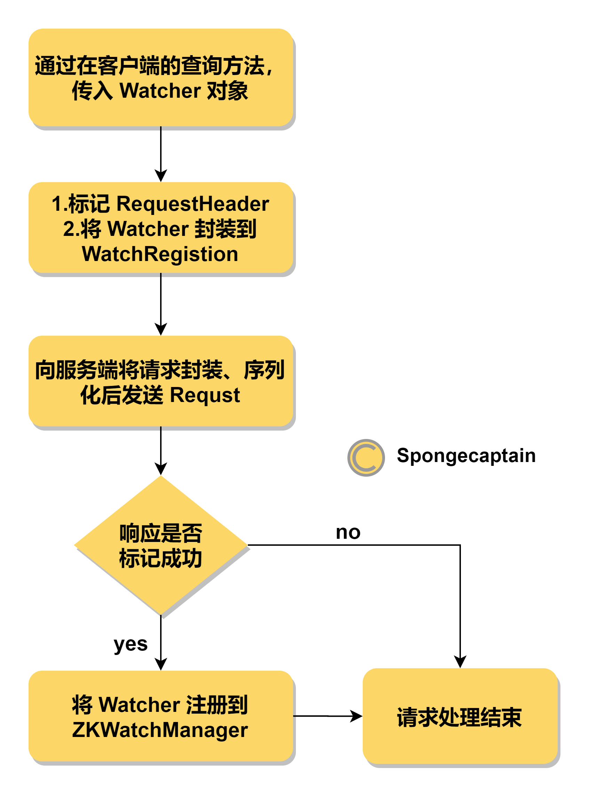

ZooKeeper Watch 机制源码解析
文章目录
1. ZooKeeper Watch 概述
ZooKeeper Watch 机制类似于 Java 设计模式中的观察者模式或者监听模式，唯一的不同是不再基于线程间通信，而是基于进程间通信。
ZooKeeper Watch 机制是指，客户端在所有的读命令上告知服务端：这个节点或者子节点变化时通知我，具体来说，支持的写操作有：
- getData
- getChildren
- exists
例如，我们在命令行可以输入 get -w /foo，其中 -w 参数就是用于告知 ZooKeeper 服务端，当前客户端想在 /foo 节点上设置一个监听器。
注意事项：写操作不支持任何形式的 watch 注册。
另一方面，ZooKeeper 支持的事件监听类型与对应的注册方法有：
- NodeCreated 节点创建：
exits() - NodeDataChanged 节点数据改变：
exits()、getData() - NodeDeleted 节点删除：
exits()、getData()、getChildren() - NodeChildrenChanged 子节点改变：
getChildren()
另外，ZooKeeper 在 3.6.0 版本中添加了永久递归 watch，这里先不解释。
注意事项：自节点数据的改变并不会引发 NodeChildrenChanged 子节点改变事件。
ZooKeeper Watch 机制的两个细节：
- wactch 是一次性触发的（除了永久递归 watch），如果客户端如果在一个 watch 通知后继续收到相同节点的 watch 通知，那么必须再次注册 watch 一次；
- 服务端发给客户端的 watch 通知并不包含具体的节点数据，其起到的作用非常存粹：告知客户端其关注的节点发生了 watch 事件；
关于 ZooKeeper Watch 源码阅读，我们需要解决如下模型的实现：
- 服务端
- 如何为带有 watch 的读请求进行事件注册；
- 在节点的写操作发送时，如何触发事件，将事件通知发送给客户端；
- 客户端
- 命令的发送、注册用与序列化发送；
- 事件的监听与回调；
模型如下图所示：

这里的要点是：无论是客户端还是服务端，只有将 Watcher 进行注册，才能在事件发送时进行回调，否则不进行回调。
2. 与 Watch 机制紧密相关的若干类
ZooKeeper 中与 Watch 机制紧密相关的类主要有：
- Watcher 接口
- WatchedEvent 类
- WatcherEvent 类
- ZKWatchManager 类
- WatchManager 类
下面依次展开说明。
2.1 Watcher 接口
Watcher 接口主要用于表示一个标准的事件处理器（而不是事件），其仅仅定义了一个方法 process() 方法上，同时在内部定义了枚举类用于定义具体的事件类型。
特别需要指出的时：ServerCnxn 类实现了 Watcher 接口。
Watcher 接口的唯一的抽象方法，如下：
|
|
process() 方法通常作为一个回调方法被调用，当 ZooKeeper 向客户端发送一个 Watcher 事件通知时，客户端就会对相应的 process() 方法进行回调，从而实现对事件的处理。
Watcher 还有内部接口与枚举，包括：
- Watcher.Event 接口；
- Watcher.WatcherType 枚举类；
一个 Watcher 实例都应当实现 Watcher 接口，这里需要指出的是，一个 Watcher.Event 接口用于描述一个事件的类型，包括：
- EventType：Event 的事件类型；
- Watcher 的类型(关于子节点、当前节点数据还是任意之一)；
- KeeperState：此时 ZooKeeper 客户端的状态(主要是指连接状态) ；
注意事项：上述内部枚举类与接口都可以被其他类直接访问，因为它们默认为 public。这些枚举类主要被 WatcherEvent 与 WatchedEvent 使用。
Watcher 接口实例在服务端与客户端上的作用不同：
- 服务端：Watcher 的类型主要是 ServerCnxn，其
Watcher.process(WatchEvent event)方法用于将事件通知消息序列化后发送给对其感兴趣的客户端节点； - 客户端：Watcher 的类型通常是 default，用于处理从服务端传来的的事件通知消息；
Watcher 接口的多态特性很容易在阅读源码时引起疑惑。
2.2 WatchedEvent 类
WatchedEvent 类是事件的类型的封装，其除了构造器、内部字段的 get 方法，主要就是如下字段：
|
|
可见 WatchedEvent 实例内的两个字段：keeperState 与 eventType 描述了事件类型，其值来源于 Watcher 接口内部的两个枚举类：Watcher.Event.EventType 与 Watcher.Event.KeeperState 类。
常见的 KeeperState 和 EventType（使用具体某一个整型值表示）组合如下，它们一起描述了某一种具体事件：
| KeeperState | EventType | 触发条件 | 说明 |
|---|---|---|---|
| SyncConnected | None(-1) | 客户端与服务端成功建立会话 | 客户端和服务端处于连接状态 |
| SyncConnected | NodeCreated(1) | Watcher 监听对应的数据节点被创建 | 客户端和服务端处于连接状态 |
| SyncConnected | NodeDeleted(2) | Watcher 监听对应的数据节点被删除 | 客户端和服务端处于连接状态 |
| SyncConnected | NodeDataChanged(3) | Watcher 监听对应的数据节点的内容发生变更 (数据内容和数据版本号) | 客户端和服务端处于连接状态 |
| SyncConnected | NodeChildrenChanged(4) | Watcher 监听对应的数据节点的子节点列表发生改变 | 客户端和服务端处于连接状态 |
值得一提的是，其有一个特殊的方法，用于封装事件信息，得到一个 WatcherEvent 实例，如下所示：
|
|
由此我们可以得知，WatcherEvent 类与 WatchedEvent 类之间的主要区别在于：
- WatcherEvent 用于网络传输；
- WatchedEvent 用于逻辑处理（通常过程中的逻辑处理）；
2.3 WatcherEvent 类
上面已经说过了，WatcherEvent 类的主要用途是在网络上进行事件的传播，其与 WatchedEvent 类的最主要区别在于其额外时间了 Record 接口，如下所示：
|
|
Record 接口中的两个方法恰好对应于序列化与反序列化。
需要注意的一点是，无论是 WatchedEvent 还是 WatcherEvent，其对 ZooKeeper 服务端事件的封装都是极其简单的。举个例子来说，当 /zk-book 这个节点的数据发生变更时，服务端会发送给客户端一个 “ZNode 数据内容变更”事件，客户端只能够接收到如下信息：
KeeperState: SyncConnected
EventType: NodeDataChanged
Path: /zk-book
从上面展示的信息中，我们可以看到，客户端无法直接从该事件中获取到对应数据节点的原始数据内容以及变更后的新数据内容，而是需要客户端再次主动去重新获取数据。这也是 ZooKeeper Watcher 机制的一个非常重要的特性。
2.4 ZKWatchManager 与 WatchManager 类
ZKWatchManager 与 WatchManager 分别为客户端上的 Watch 管理者以及服务端上的 Watch 管理者。
其中 WatchManager 负责以下三件事：
- Watcher 的注册：在注册时，将 path 映射为
Set<Watcher>，将 Watcher 映射为Set<String>，其中 String 的语义是 path； - Watcher 注册的移除管理；
- Watcher 事件的触发（trigger）；
ZKWatchManager 类有着类似的作用，只不过其用于为 ZooKeeper 客户端提供服务。
ZKWatchManager 类与 WatchManager 类的最大区别在于其为不同类型的 Watcher 注册使用了不同的 HashMap 来存储，且存储了一个客户端默认 Watcher 通知处理器 Watcher defaultWatcher 字段。，如下所示：
|
|
2.5 WatchRegistration 类
WatchRegistration 类是 ZooKeeper 类的内部抽象类，可见其主要为 ZooKeeper 客户端服务。
WatchRegistration 类代表了一个 path 与一个 Watcher 的注册信息，其有 4 个子类，且都为 ZooKeeper 内部类：
- AddWatchRegistration
- ChildWatchRegistration
- DataWatchRegistration
- ExistsWatchRegistration
这些类的区别是什么？
- AddWatchRegistration 用于在
addWatch()方法中在客户端注册一个 Watcher； - ChildWatchRegistration用于在
getChildren()方法中在客户端注册一个 Watcher，对应子节点增加事件； - DataWatchRegistration用于在
getData()方法中在客户端注册一个 Watcher，对应数据修改事件； - ExistsWatchRegistration用于在
exists(()方法中在客户端注册一个 Watcher，对应节点创建事件；
2.6 WatcherSetEventPair 类
WatcherSetEventPair 类服务于 ZooKeeper 客户端，其为 ClientCnxn 的内部类，其主要负责封装：
- WatcherEvent；
- 关注于此 path 的 Watcher 容器；
其通常在客户端的 ClientCnxn.SendThread 线程在接收到一个事件通知时，通过读取之前 Watcher 在本地的注册信息来初始化，方便 ClientCnxn.EventThread 线程处理 WatcherEvent。
3. ZooKeeper 服务端的 Watcher 实现
再次说明：本文基于 ZooKeeper release-3.6.1，不同版本的 ZooKeeper 在源代码上将有所不同。
3.1 ZooKeeper 服务端对客户端请求中的事件注册
我们以 getData 方法为例进行说明 ZooKeeper 服务端如何给带有 watch 的读请求进行注册，我们假设此时命令行执行的命令为 get -w /foo。
我在 ZooKeeper 服务端线程分析 一文中已经叙述过了来自客户端的请求如何被服务端接收并处理，这里不再重复说明。我们直接移步到 FinalRequestProcessor.processRequest(Request request) 方法中的 case OpCode.getData: 逻辑块，如下：
|
|
这里我并不想贴大量的代码，这里主要说明执行逻辑，具体的源码分析可以参考我的 个人 ZooKeeper 源码分析项目，从 FinalRequestProcessor 类入手进行分析。
FinalRequestProcessor.handleGetDataRequest() 方法的执行逻辑为：
- 得到 getData 命令中的 path；
- 检查 path 对应的 ZNode 节点是否存在，如果不存在，那么直接抛出异常退出，否则，继续下一步；
- 进行 ACL 检查；
- 重新构造一个 Stat 实例 stat，用于后续从 Node 上将 metadata 数据复制到该 Node 上；
- 检查请求是否有设置 wacth 参数，并根据是否存在来决定如何从 ZKDatabase 实例上获取 Node 数据：
- 如果有设置，那么通过向 ZKDatabase 实例的
getData()方法传入：path、stat 以及当前 ServerCnxn 实例； - 如果没有设置，那么通过向 ZKDatabase 实例的
getData()方法传入：path、stat 以及 null；
- 如果有设置，那么通过向 ZKDatabase 实例的
ServerCnxn 实例对应于当前 ZooKeeeper 服务端与客户端的连接。
此时，Watcher 还没有注册，不过任务已经从 FinalRequestProcessor 转移到了 ZKDatabase 实例上。
ZKDatabase.getData(String path, Stat stat, Watcher watcher) 方法的执行逻辑为：
- 检查入口参数 path 对应的节点是否存在，如果不存在，那么直接抛出异常退出，否则，继续下一步；
- 从节点读取相关数据复制到 stat 实例；
- 利用
WatchManager.addWatch(String path, Watcher watcher)方法来完成 watch 的注册（真正是否注册取决于 watcher 是否为 null）； - 得到节点的数据 data；
- 返回 data 数据；
可见，最后 ZKDatabase 实例实际上也没有完成 Watcher 的注册工作，而是将 Watcher 注册任务交给了 WatcherManager 来实现。
WatcherManager.addWatch(String path, Watcher watcher) 方法的运行逻辑如下：
- 如果存在 path 对应的
Set<Watcher>list，那么就将当前 Watcher 添加到这个 list 中去；如果没有，那么新建一个，再添加； - 如果存在当前 Watcher 对应的
Set<String>（String 的语义为 path）list，那么就将当前 path 加入到这个 list 中取；如果没有，那么新建一个，再添加； - watcher 模式注册：如果默认模式，那么没有必要注册，我们需要确保其不在 watcherModeManager 实例的 watcherModes（hashMap）字段中注册，非默认模式则要确保注册；
特别注意：
- 这里的 list 容器都基于 Set 实现，可见我们并不能重复注册，举一个例子来说就是：即使我们重复执行了
get -w /foo命令，但最终也仅仅注册了一次 Watcher，在触发一次之后，只有再次注册，才能触发事件。 - 每一个路径都可以被多个 Watcher 实例监视，每一个 Watcher（ServerCnxn 实例）实例也都可以监视多个 path；
最后，我们总结一下 Watcher 的注册流程：
- 权限以及 path 合法性校验；
- 数据以及 stat 的获取；
- 将 Watcher（这里时 ServerCnxn 实例）与 path 进行相互的映射
总之，Watch 注册成功后，我们达到了这样这样的效果：
- 通过给 WatchManager 实例提供 path，我们能够得到所有监听此 path 的 Watcher 实例；
- 通过给 WatchManager 实例提供 Watcher，我们能够得到该 Watcher 实例正监听着的所有节点对应的 path；
3.2 ZooKeeper 服务端的事件触发与事件通知
既然上面 Watcher 注册的例子使用了 getData 读操作时附加 Watcher，那么这里的事件的触发与通知对应地从 setData 方法出发，具体地，我们从 DataTree.setData(String path, byte[] data, int version, long zxid, long time) 方法出发。
此时，写操作对应的日志已经是持久化好了的。调用此方法的线程为 SyncRequestProcessor 线程。
这里还是不想贴代码，如果你先看源码，可以移步为的 ZooKeeper 个人项目，根据下面的方法入口进行阅读。
DataTree.setData(String path, byte[] data, int version, long zxid, long time) 方法的执行逻辑为：
- 构造一个 Stat 实例；
- 检查 path 对应的 DataNode 节点是否存在，如果不存在那么就 path 不合法，抛出异常，否则进行下一步；
- 修改 DataNode 实例的数据；
- 修改 DataNode 实例内部的 Stat 属性；
- 将更新后的 Stat 属性赋值给新构造的 Stat 实例；
- …
- 通过
WatchManager.triggerWatch(String path, EventType type)方法来触发 Watcher 的事件；
WatchManager.triggerWatch(String path, EventType type) 方法的入口参数分别为写操作对应的路径以及事件类型，其执行逻辑为：
- 构造一个 WatchedEvent 实例，依次封装了：事件类型、通知状态、节点路径；
- 构造一个新的
Set<Watcher>容器 watchers，用于存放稍后待触发的 Watcher； - 通过遍历迭代器的方式来检查当前路径以及父路径是否有对此 path 感兴趣的 Watcher，如果有，那么将其加入到 watchers 容器中；
- 遍历 watchers 容器内的所有 Watcher 实例的
process(WatchedEvent event)方法，来处理 WatchedEvent 事件；
同时，我们知道最常见的 Watcher 接口实现便是 ServerCnxn 实例，我们关注于基于 JDK NIO 的 NIOServerCnxn。
NIOServerCnxn.process(WatchedEvent event) 方法的运行逻辑如下：
- 首先构造一个 ReplyHeader 实例，其封装了响应类型、响应的 zxid，以及错误码（即使完全正常也需要错误码）；
- 将 WatchedEvent 转换为 WatcherEvent，前者用于程序内部处理，后者用于事件序列化的发送；
- 将 ReplyHeader、WatcherEvent 序列化为 ByteBuffer 后加入到 outgoingBuffers 队列中，等待异步线程的消费与发送；
我们做一个总结，事件的触发是 SyncRequestProcessor 线程中发生的，其负责处理写操作作用域内存以及 Watcher 触发。Watcher 触发机制主要基于通过问询 WatcherManager 内的 Watcher 注册信息完成。如果在遍历注册信息时发现有对应的 Watcher，那么最后 SyncRequestProcessor 线程会负责执行其 process(WatchedEvent event) 方法。
从上述过程可以见得，Zookeeper 服务端给客户端发送的事件通知没有具体节点的数据信息，其为单纯的一个事件通知。
4. ZooKeeper 客户端的 Watcher 实现
4.1 ZooKeeper 客户端的 Watcher 消息发送
首先我们要关注的是 ZooKeeper 构造器，其一个重载版本如下：
|
|
构造器入口中的 Watcher 实例作为整个 ZooKeeper 会话期间的默认 Watcher，会一直被保存在客户端 ZKWatchManager 的 defaultWatcher 中。
无论是 ZooKeeeper 命令行客户端，还是 ZooKeeper 类本身，都最终通过 ZooKeeper 实例的相关方法完成注册，即：getData()、getChildren() 以及 exist() 方法。例如，getData() 有多个重载方法，如下：
|
|
参数说明：
- String path：getData 命令作用的路径；
- boolean watch：如果有这个参数，那么就不会有 Watcher watcher 参数，其为 true 说明需要注册一个 Watcher，且使用默认的 Watcher，否则不注册 Watcher；
- Watcher watcher：如果有这个参数，那么就不会有 boolean watch 参数，其用于指定一个自定义的 Watcher 并注册；
- Stat stat：调用方法后，接收到的 Stat 数据为写入此 stat 指向的 Stat 实例；
我们以方法 ZooKeeper.getData(final String path, Watcher watcher, DataCallback cb, Object ctx) 为例进行 Watcher 注册逻辑的分析。
详细地来说，ZooKeeper 客户端注册 Watcher 的流程如下图所示：

- 客户端线程发出一个带有 Watcher 注册的查询命令，通过解析、语法检查、封装为 Packet 实例保存于 outgoingQueue 队列中。Watcher 的 Watcher 注册信息由 WatchRegistion 封装，主要为路径以及 Watcher 实例；Packet 拥有 WatchRegistion 实例的引用；
- ClientCnxn.SendThread 线程负责消费 outgoingQueue 队列中的 Packet 实例，通过序列化 Packet 实例发送给 ZooKeeper 服务端后，将 Packet 实例保存于 pendingQueue 队列中；
- ClientCnxn.SendThread 线程还负责处理 NIO 的 Channel 上的读事件，当读到来自 ZooKeeper 服务端对查询操作的响应后，首先判断响应的状态码（err）是否为 OK，如果是，那么就将其对应的 Watcher 注册到 ZKWatchManager 中（通过在 pendingQueue 队列中的 Packet 实例就能够轻松拿到 WatcherRegistion 注册信息）；如果响应带有错误状态码，那么就选择不注册此 Watcher；
- ClientCnxn.SendThread 线程还负责处理类型为事件通知的服务端消息，这部分属于 ZooKeeper 处理事件回调的逻辑，在下面会有讲到。
只有响应状态码为正常码（OK）的 Watcher 才会注册，否则代表请求失败，Watcher 的注册将引来复杂的问题。
注意事项：
- 来自 ZooKeeper 服务度的消息囊括了一般请求（例如 getData）的响应、事件通知、鉴权通知等类型。只有是正常请求响应才需要将其 Watcher（如果有的话）注册到 ZKWatchManager 中，如果是事件通知，那么是没有必要注册的，因为此时需要的是通知 EventThread 线程来处理此事件，而 Watcher 的注册是在之前就完成了。
- 另一方面，需要注意 Packet 的序列化。ZooKeeper 服务端只需要知道客户端的请求中带有 Watcher 即可，并不需要实际的 Watcher 实例，因为事件触发后的处理总是由客户端来处理的（Watcher 实例提供事件处理逻辑），服务端没必要知道具体的处理实例（它又不会负责调用相关方法）。
总结一下，带有 Watcher 注册信息（WatcherRegistion 实例）的请求将经历两次入队与两次出队操作：
- 第一次入队：ZooKeeperMain 线程负责将带有 Watcher 注册信息的读请求封装为 Package 加入到 ClientCnxn.outgoingQueue 队列中。这次的入队操作相当于从应用层向传输层写要发送的数据，需要队列的原因是传输层的异步网络传输；
- 第一次出队与第二次入队：ClientCnxn.SendThread 线程将 outgoingQueue 队列上的 Package 取走，然后序列化发送给 ZooKeeper 服务端，发送完毕后将将序列化前的 Package 实例加入到 ClientCnxn.pendingQueue 队列中；
- 第二次出队：当 ClientCnxn.SendThread 线程读到 SocektChannel 上的可读事件时，如果可读事件对应的内容是读操作的响应（而不是其他消息，例如事件通知），那么在判断响应状态码无误的情况下就会将 outgoingQueue 队列上对应 Package 取走，然后利用 Package 得到 Watcher，并将其注册到 ZKWatchManager 中；
如果你要看这部分的源码，因为这是一个异步操作，因此需要两个方法入口，如下：
ZooKeeper.getData(final String path, Watcher watcher, DataCallback cb, Object ctx)方法；ClientCnxn.SendThread.run()
4.2 ZooKeeper 客户端的 Watcher 通知处理
ZooKeeper 客户端对 Watcher 通知的处理首先依赖于 ClientCnxn.SendThread 线程，因为事件通知本身也就是服务端给客户端的一个消息。需要注意的是，SendThread 不仅仅用于发送消息，实际上其也负责接收消息（即第一时间处理 Channel 上的可读事件）。
ClientCnxn.SendThread.readResponse(ByteBuffer incomingBuffer) 方法的执行逻辑如下：
- 将入口参数 ByteBuffer 实例中的字节数据序列化为一个 ReplyHeader 实例；
- 根据 ReplyHeader 实例给的 xid 字段值来判断响应类型，这里我们仅仅说明事件通知的处理，因此这里就关注于当响应类型为事件通知时的处理；
- 构造一个新的 WatcherEvent 实例，并利用其
deserialize(InputArchive a_, String tag)方法将响应中的数据反序列化为 WatcherEvent 实例； - 路径的转换；
- 将用于网络传输的 WatcherEvent 实例转换为用于逻辑操作的 WatchedEvent 实例；
- 通过 ZKWatchManager 类实例内的注册信息来确定能够处理此事件的 Watcher 容器
Set<Watcher> watchers； - 将 WatchedEvent 实例、Watcher 容器以及发送事件的 path、事件类型等信息封装为 WatcherSetEventPair 实例加入到 ClientCnxn.EventThread.waitingEvents 队列中；
总结一下，ClientCnxn.SendThread 线程完成了将事件通知消息序列化为 WatcherSetEventPair 实例，加入到异步队列中。
ClientCnxn.EventThread.waitingEvents 队列中的 WatcherSetEventPair 实例被 ClientCnxn.EventThread 线程消费，其逻辑处理逻辑自然是在 EventThread 线程的 run() 方法中。
- 从 ClientCnxn.EventThread.waitingEvents 队列中取出事件，如果队列为空，那么此时会阻塞；
- 判断取出的事件是否已经被取消了，如果是，那么进行资源的释放，如果不是，那么进行资源的释放；
- 通过
EventThread.process(Object event)方法来处理事件，其执行逻辑为：- 判断输入事件的类型，注意 event 实例的类型可能有非常多种，我们这里仅仅分析一种，WatcherSetEventPair 类型；
- 得到 WatcherSetEventPair 实例内部的 WatchedEvent 事件；
- 遍历 WatcherSetEventPair 实例内部的 Watcher 实例，对每一个 Watcher 都执行
process(WatchedEvent event)方法进行调用；
此时事件处理完毕。
通常，客户端的读命令并不会提供一个 Watcher 事件处理器，此时就会使用默认的 Watcher 事件处理，那么默认的处理器类型是什么呢？
默认的 Watcher 事件处理器的类型为 ZooKeeperMain.MyWatcher 类，其实现非常简单，如下：
|
|
补充：默认的 Watcher 事件处理器存放于 ZKWatchManager 类中。
5. ZooKeeper Watch 机制的特性总结
ZooKeeper 的 Watch 有如下几个特性需要注意：
-
一次性
无论是服务端还是客户端，一旦一个 Watcher 被触发，ZooKeeper都会将其从相应的存储中移除。因此，开发人员在 Watcher 的使用上要记住的一点是需要反复注册。这样的设计有效地减轻了服务端的压力。试想，如果注册一个 Watcher 之后一直有效，那么，针对那些更新非常频繁的节点，服务端会不断地向客户端发送事件通知，这无论对于网络还是服务端性能的影响都非常大。
需要注意的是：ZooKeeper 在 3.6.0 版本中引入了永久 Watcher 机制，利用这个机制可以避免反复注册 Watcher。
-
客户端串行执行
客户端 Watcher 回调的过程是一个串行同步的过程，这为我们保证了顺序，同时，需要开发人员注意的一点是，千万不要因为一个 Watcher 的处理逻辑影响了整个客户端的 Watcher 回调。
-
轻量
WatchedEvent 是 ZooKeeper 整个 Watcher 通知机制的最小通知单元，这个数据结构中只包含三部分内容:通知状态、事件类型和节点路径。也就是说，Watcher 通知非常简单，只会告诉客户端发生了事件，而不会说明事件的具体内容。例如针对 NodeDataChanged 事件，ZooKeeper 的 Watcher 只会通知客户端指定数据节点的数据内容发生了变更，而对于原始数据以及变更后的新数据都无法从这个事件中直接获取到，而是需要客户端主动重新去获取数据。这也是ZooKeeper 的 Watcher机制的一个非常重要的特性。
另外，客户端向服务端注册 Watcher 的时候，并不会把客户端真实的 Watcher 对象传递到服务端，仅仅只是在客户端请求中使用 boolean 类型属性进行了标记，同时服务端也仅仅只是保存了当前连接的 ServerCnxn 对象。如此轻量的 Watcher 机制设计，在网络开销和服务端内存开销上都是非常廉价的。